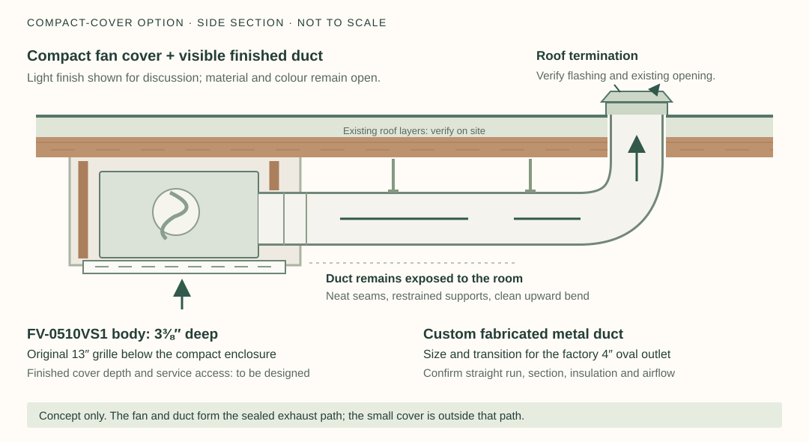
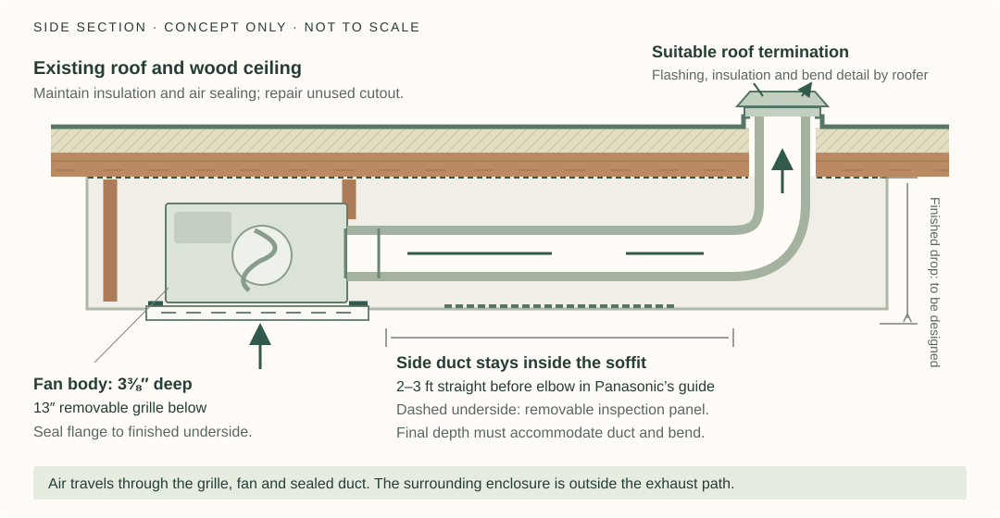
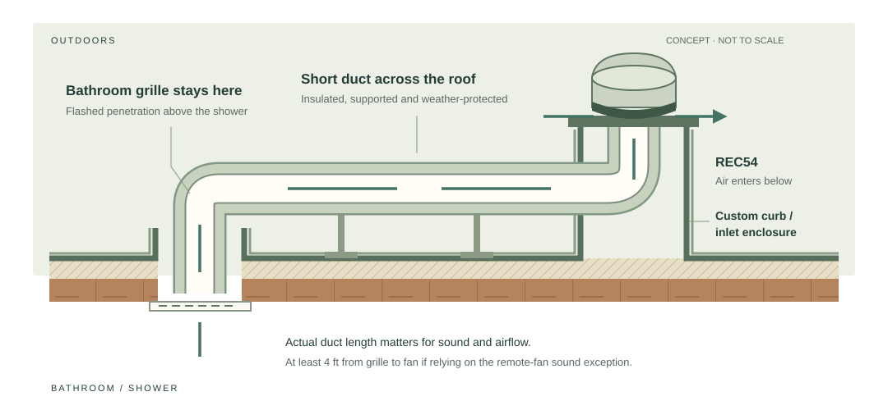

Fan inside a rooftop enclosureBroan-NuTone L100EPotentially serious compliance issueTitle 24: No. ENERGY STAR certified.
The fan’s original grille at the wood ceiling.
Custom flashed, insulated enclosure around the indoor fan; upward duct to a roof cap.
Indoor fan options · Exposed or enclosed duct
Compare two ways to finish an indoor fan.
A compact cover leaves the duct visible; an elongated cover conceals the fan and duct together. Both layouts can be evaluated with the shallow FV-0510VS1 or the installed FV-0511VQ1, with dimensions and mounting adjusted to the equipment.
01
Shallow fan option
Panasonic FV-0510VS1
WhisperValue DC · Replacement option for the installed FV-0511VQ1
Fan body
10¼″ × 10¼″ × 3⅜″ deep
Grille
13″ square
Airflow settings
50 / 80 / 100 CFM
Sound at 0.1 in. w.g.
<0.3 / 0.4 / 0.9 sones
Outlet
Side; oval collar for 4″ duct
The installed FV-0511VQ1 has a 7⅜″ body and a lower rated sound level at 80 CFM under the same test conditions. The shallow model’s advantage for this design is its smaller body depth. Finished cover depth still includes mounting, connections, finish and grille projection.
Keep the enclosure local to the fan body, adaptor and necessary service connections. Use its original grille below, with the fan supported by the manufacturer’s mounting arrangement and suitable framing. Preserve access to the grille, motor, damper and electrical connections.
Have a sheet-metal fabricator propose a smooth duct exterior with tidy seams, discreet supports and a deliberate upward bend at the roof connection. Coordinate the duct finish, fan cover and trim as one visual composition. Material and colour remain open; a finish matching the ceiling is one option to sample.
The compact enclosure and exposed duct are custom construction details, not a Panasonic kit. Final geometry, mounting, finish and performance require a measured design.
Compact enclosure with exposed custom duct

Compact-cover concept; not to scale or traced from the installation photo. The light finish is illustrative. Duct shape, supports, joint treatment, insulation, finished dimensions and roof detail remain to be designed. Open the full-size compact-cover sketch.
Resolve the cover and the duct as separate pieces
Compact cover
Size around the fan, 13″ grille, adaptor, mounting and service access. The 3⅜″ body depth is not the finished projection. Make a measured mock-up before fabrication.
Exposed duct
Show the duct’s outer dimensions and lowest point separately from the cover. Keep the factory outlet intact; design the transition and section for airflow, then refine the seams, supports and finish.
Upward turn
Measure the available straight run, elbow and roof opening. Coordinate the bend and roof-entry trim with the exterior cap, flashing and any required insulation.
A clean exterior still needs a complete duct design.
Start with the manufacturer’s 4″ duct arrangement and factory oval adaptor. Round or oval metal duct can be considered for the visible run. A flatter rectangular section is a separate design proposal: matching cross-sectional area alone does not establish equivalent resistance or performance. Do not reduce or flatten the passage solely to make it less visible.
Specify smooth internal surfaces, mechanically secured and sealed joints, appropriate supports and a serviceable connection. Panasonic illustrates 2–3 ft of straight duct before an elbow (manual page 8) and warns against a bend close to the adaptor (page 4). Check the measured route and verify delivered airflow.
Resolve condensation protection at cold sections and the roof transition. If insulation is required on a visible section, include its finished jacket in the appearance and size proposal. A neat seam or painted exterior must not replace the required joint seal.
Original grille and replacement-part links
Both indoor layouts use the fan’s original grille beneath its enclosure. The elongated enclosure can also be considered with a second matching grille as a separate access detail. Replacement parts are listed below.
Matching replacement grilles · Links checked September 23, 2026
Both fans specify nominal 13″ square grilles, but these are different parts. The VS1 spare grille was out of stock at Encompass when checked September 23; confirm availability if a replacement is needed. The new fan’s installation manual lists a grille among its supplied accessories.
Moisture details for the compact fan cover
Keep the cover on the room side of the roof’s insulation and air barrier. Use suitable wipeable finishes, dry materials and removable inspection access. Seal the fan flange to the finished underside and seal the duct connections; preserve the original grille and required openings.
Added decorative vents are not specified in this concept. The cavity around the fan is outside its exhaust path, so opening that cavity to the room would not establish deliberate drying airflow. Coordinate any alternative vented detail with the moisture design.
Elongated enclosure with concealed duct
A single finished soffit can surround the fan and side duct up to the roof turn. This provides one continuous finished surface; its length, width and drop must accommodate the fan, duct, elbow, support, finish and service access. Assess both Panasonic models against the same measured route.

Concealed-duct concept; not to scale. The illustrated shallow fan is FV-0510VS1. An enclosure retaining FV-0511VQ1 needs its own dimensions. Open the full-size enclosed-duct sketch.
Optional matching grille over the duct compartment
A second grille can conceal removable access, with its own supported mounting. If open, it leads into the surrounding cavity rather than the fan intake, so it does not establish forced drying. A grille mounted over a gasketed solid panel is decorative and provides no ventilation. Keep the fan and duct as the sealed exhaust path.
Preliminary allowances of 16–18″ width, 48–60″ length and 6–8″ drop were developed for the shallow-fan soffit before the photo was supplied. They are not measured dimensions or fabrication sizes. Determine both enclosure options from the actual installation.
Equipment and installation basis: Panasonic manual, pages 3–8; PNNL duct and airflow guidance. The compact cover, exposed finish and fabrication approach are project design proposals. Final geometry and performance remain to be verified.
Version 1902 · PDF page 7, item 13 identifies FFV1115VQ1A Grill Assembly; exploded mounting drawing on page 3.
Exterior fan option
A curb-mounted fan for the flat roof.
The REC54 is the Fantech model considered here for the flat roof. It mounts on a raised, flashed curb; air enters through a duct below the fan and leaves outdoors under its cover.
02
Curb-mounted roof option
Fantech REC54
Curb-mounted exterior fan
A raised curb provides the mounting and flashing interface. The roofer must design it for the actual roof material, slope and drainage.
*Dimension B in the 2021 manual, page 3. Curb height is additional; REC has a separate 1½″ flange dimension. These are equipment dimensions, not finished roof heights.
Roof curb · Sold separately from the fan
Fantech 5ACC15FS
Fixed, non-vented curb for REC54 / REC6 · Item 49580
Fantech’s catalog lists this curb for the REC54 and REC6. HVACQuick describes it as a nominal 15″ curb, 8″ tall. Select 5ACC15FS in the retailer’s model table; the same page also sells the fans.
Catalog PDF page 1 (printed page 272). Publication date is unconfirmed; catalog prices are historical. Have the roofer confirm the mounting dimensions, finished height and flashing for this roof. This standard curb does not establish the custom side-entry connection in the offset sketch.
Related model: Fantech RE54. This is the flat-base version in the same series. Fantech illustrates it with pitched-roof flashing; a flat base should not be assumed to provide a suitable waterproof detail for this flat roof. It is included only as a reference note; the roof layouts below use the curb-mounted REC54. Manufacturer’s series page ↗ · Series retailer listing ↗.
Physical fit is only the first question. Current ENERGY STAR certification and the sound-compliance route for a short duct remain unresolved. The historical curve gives 116 CFM at free air, 92 at 0.25 in. w.g. and 65 at 0.5; actual delivered airflow depends on the complete duct, grille and damper arrangement. Performance brochure (2010).
Additional project download. Identical contents to the 2021 installation manual; retained so every downloaded file is linked.
Installation sketches
Direct connection or extended roof route.
A short, direct connection places the REC54 and curb above the bathroom grille. An extended connection places the fan farther away, with protected ductwork across the roof. Both routes keep the duct above the wood ceiling.
03
Direct route: the shortest connection
Locating the curb above the grille reduces duct length and rooftop equipment footprint. It also leaves a shorter path for fan sound to reach the room, and may not meet the length condition for the remote-fan sound exception.
Extended route: offset the fan from the shower inlet

Custom concept, not a manufacturer-approved curb detail. Fantech illustrates remote grilles, but its standard curb instructions put the curb over a roof opening. This above-roof connection into the space under the fan needs confirmation from Fantech and the roofer. Open the full-size offset sketch.
Why offsetting may help
Separation can reduce the direct sound path and provide space for an appropriate duct silencer, if needed. An actual duct run of at least 4 feet can satisfy the length condition for the remote-fan sound exception, subject to its other conditions. This is duct length, not necessarily horizontal separation.
What the longer route adds
More duct and bends add resistance. Above-roof ductwork needs weather protection, insulation, supports, sealed joints and a condensation strategy. A low weatherproof chase is one option; ordinary attic flex duct left exposed on the roof is not the proposed detail.
Provide the REC54’s curb mounting and maintain the manufacturer’s service and electrical access.
2
Flashed curb
Coordinate curb height, membrane/foam details, drainage and roofing warranty.
3
Sealed air path
Include the transition, duct insulation, backdraft protection and condensation control.
4
Roof decking
Measure the assembly and provide support for the cut boards and grille mounting.
5
Grille inside
Mount against the ceiling above the shower, with access for cleaning.
6
Airflow verified
Select the operating point from total resistance and measure the installed exhaust flow.
Why the installed Panasonic still needs a duct-space plan. Its housing is 7⅜″ deep and its 4″/6″ duct exits sideways. No suitable cavity above the ceiling has been established. A local soffit could enclose the fan and side duct; a flush grille at the wood ceiling would depend on sufficient protected space above it. Measure the installed projection before comparing enclosure depths. Panasonic dimensions (PDF).
Compare appearances · Fantech grilles
What stays in the room.
Choose the grille after checking the actual ceiling openings. A square grille or cover plate may help if a large cutout exists; a round grille may fit a duct-only opening without the illustrated square plate.
04
Front-view illustrations at the same relative scale. Round options shown with optional 13″ plates for a large-cutout scenario.
Candidate if a large square cutout exists
Hart & Cooley RH45
11¾″ square face
White aluminum. Nominal 10″ × 10″ opening; requires a mounting frame and sealed transition to the fan’s 5″ intake.
These are simplified illustrations, not photographs or exact finish previews. *MGE5 face size comes from a 2004 catalog; confirm current dimensions before fabrication. Cover plates are proposed custom parts, not supplied Fantech accessories.
Measure before choosing. Panasonic specifies 10½″ square for new construction and 10⅞″ square in its retrofit drawing. The photo does not establish that either opening exists in the wood behind this fan; inspect separately from the duct penetration. Over a 10½″ hole, the RH45 has only ⅝″ overlap on each side and its screw centers fall at the hole edges. Provide a mounting frame. A trim plate does not repair structural roof decking. Full grille comparison.
2004 · MGE5 dimensions on page 3. Confirm current dimensions before fabrication.
Contractor discussion brief
Six questions for comparing the layouts.
Eichler bathroom · No attic · Tongue-and-groove ceiling directly below a flat roof · FV-0511VQ1 already installed. Compare compact and elongated indoor covers with an exterior roof-fan arrangement. Also compare the Broan L100E rooftop-enclosure concept, with a potentially serious compliance issue still to resolve. Coordinate measured layouts with the installer, sheet-metal fabricator and roofer.
05
How will the visible components look and connect?
Provide comparable finish samples or mock-ups: exposed duct seams and supports, enclosed-duct soffit and access panels, and roof-fan ceiling grille and trim. Show attachment, sealed transitions, roof-entry treatment and access for each arrangement.
How will the cover and duct manage moisture?
Detail sealed fan flange and duct joints, roof air sealing, condensation control and backdraft protection. Show any insulation and finished jacket needed at cold duct sections, including their outer dimensions. Provide cover inspection access and dry materials before closure.
What is the sound-compliance route?
For Panasonic layouts, assess rated sound at the selected airflow, duct resistance and vibration at supports. For the Fantech roof-fan layout, confirm sound data and the actual grille-to-fan duct length, including the 4-foot condition if using the remote-fan exception.
Is the exact unit currently certified?
Obtain current model/item-specific ENERGY STAR evidence and confirm the permit’s ventilation requirements with the city or county authority.
Which controls and electrical details?
Specify humidity control, user operation, wiring route, and service access. Confirm the manufacturer’s tub/shower and GFCI requirements for this arrangement.
How will it be cleaned and serviced?
Show access to each fan, grille, damper, duct transition and electrical connection. Confirm how the equipment can be serviced without damaging the enclosure, duct finish or roof. Detail vibration control at supports.
The saved 2007 Fantech sheet and January 2009 EPA list show historical ENERGY STAR qualification. They do not establish certification for the unit that would ship today. The 2025 CALGreen checklist, §4.506.1, addresses outdoor exhaust, ENERGY STAR fans and humidity control. Permit scope, code edition and local applicability need confirmation.
Why a roof fan is not automatically a quiet bathroom fan
The 2025 CEC ventilation form, page 6, gives local exhaust sound limits and a remote-fan exception with location conditions and at least 4 feet of duct between fan and grille. The Fantech’s historical AMCA free-field fan-sones values are not directly comparable with HVI bathroom ratings. An outdoor motor can still transmit sound through a short duct.
What remains open in the design
Layout and fan selection remain open, along with dimensions, material/finish, duct section, roof detail, controls, delivered airflow, sound and pricing. The options are concepts for comparison, not final construction details. The full research report includes these options and the earlier Broan 505 research.
Ventilation requirements for the contractor discussion
CF2R-MCH-27-H · Sound criteria and remote-fan exception, page 6.
The Contra Costa bathroom-remodel handout ↗ could not be downloaded; the previously reviewed handout referenced 2022 codes. The applicable authority may be your city.
Broan L100E · Custom roof construction
Fan inside a rooftop enclosure
The Broan L100E can discharge upward, allowing its original grille to sit against the wood ceiling while the fan body occupies protected space above the roof. With no attic, that space would need to be built as a custom enclosure. This remains an option for comparison, with a potentially serious compliance problem to resolve.
06
Potentially serious compliance problem
Broan’s product page marks “Can Be Used To Comply With Title 24” as “No,” while listing ENERGY STAR certification as “Yes.” These are separate qualifications. The Title 24 entry may prevent approval for this California bathroom remodel; ENERGY STAR certification alone does not resolve it. Manufacturer specifications ↗ (checked September 23, 2026).
Before selecting or fabricating this arrangement, obtain Broan’s explanation of that entry and ask the permitting authority whether the exact model, controls and installation can meet the applicable requirements. The product page does not explain the reason for “No,” and adding a humidity control has not been established as a solution. Compliance remains unresolved; the option is retained for comparison.
Indoor fan · Upward outlet
Broan-NuTone L100E
Ceiling/wall fan · Convertible discharge direction
Fan body
12¼″ × 12¼″ × 11¾″ deep
Grille
14″ square
Outlet
8″ round; side or top
Vertical at 0.1 in. w.g.
140 CFM · 0.3 sones
Vertical at 0.25 in. w.g.
101 CFM · 0.6 sones
Electrical supply
120 V
These are the specification sheet’s HVI vertical-discharge ratings, page 2. Broan’s headline 130-CFM rating describes horizontal discharge. The unit ships with the outlet at the side; the manual shows repositioning the blower and duct connector for upward discharge.
The fan’s 11¾″ body depth is only one part of the required space. Size the enclosure for the actual roof assembly, framing, insulation, electrical connections, service access and the upward duct connection. Its finished roof height cannot be determined from the fan depth alone.
The enclosure needs a weatherproof exterior, flashing integrated with the flat roof, and a continuous insulation and air-sealing detail around the protected fan space. Keep the grille removable from the bathroom and establish how the fan and roof connections will be serviced.
This is a proposed building detail, not a Broan enclosure kit. Broan illustrates a ceiling installation and vertical duct conversion; the manual does not establish approval for this custom rooftop assembly.
Air path through the enclosure
Ceiling grille → fan in the protected enclosure → sealed 8″ metal duct → exterior roof cap. The enclosure surrounds the equipment; the exhaust stays inside the fan and duct until it reaches outdoors. It must not discharge into the enclosure. Coordinate the roof cap, backdraft protection, supports and condensation control with the complete duct design.
What the enclosure proposal needs to resolve
Ceiling opening and support
Position the fan housing at the finished ceiling plane and support it from suitable framing. The original grille remains visible. Survey the wood roof deck before specifying a cutout: the 12¼″ housing width is larger than the earlier, unverified Panasonic opening estimate. A 14″ grille does not determine the structural opening.
Weather and moisture
Have the roofer detail a raised, flashed enclosure compatible with the roof covering and drainage. Define the insulation and air barrier around the fan and roof penetration, seal the exhaust duct, and address condensation. The fan’s internal acoustic lining is not a design for the roof’s thermal insulation.
Installation and maintenance
Plan access from above for installation and any roof-side connections; Broan lists room-side installation as “No.” Preserve grille and blower removal below, and provide service access to other components without dismantling the roof. Size and support the cap and duct, then verify installed airflow.
The interior advantage is a grille at the ceiling with no indoor soffit or visible side duct. The corresponding work moves to the roof: the opening and framing, a custom weatherproof enclosure and a separate termination. Roof height, appearance, cost and service access need a measured proposal before comparison with the curb-mounted REC54.
On/off switch operation
The manual’s “Use and Care” section explicitly permits an on/off switch or a suitable variable-speed control. “Designed for continuous operation” means the fan can run continuously, not that it must. The L100E has no built-in humidity sensor; the project’s control requirements still need to be resolved.
Shower location and electrical access
The manufacturer permits ceiling mounting over a tub or shower with a GFCI-protected branch circuit. Provide accessible wiring connections and a switch outside reach of the tub or shower. That listing does not establish approval for the proposed roof enclosure.
{kind=link}
{kind=link}
{kind=link}
{kind=link}